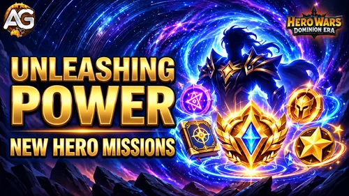

Unleashing Power is a set of progression missions that accompanies new hero events in Hero Wars: Dominion Era. It rewards reaching upgrade targets for the featured hero, alongside the other objectives listed for that edition.
This guide covers new hero editions in one place. The current mission tables use Wodryn, introduced through Roots of Destiny. Future heroes may have different targets or rewards, so check the edition before planning your upgrades.

How Unleashing Power Works
The main hero introduction event and Unleashing Power have different objectives. For Wodryn, Roots of Destiny is the main event; Unleashing Power tracks the listed hero upgrades and other progression tasks.
Progress toward the milestones shown in the event window, then claim any available rewards. The targets in each table are cumulative requirements for that category, rather than separate amounts to add together.
Some tasks name the featured hero directly. Others can use a wider pool of upgrades. Keep that distinction in mind before spending resources on a hero you do not plan to build.
Wodryn Edition: Roots of Destiny
Listed schedule: November 16–22, 2026, lasting seven days. Wodryn is the featured new hero for this edition. See the Dominion Era event calendar for its overlap with other events.
Unleashing Power lists 59 milestones across eight mission categories. They cover Gift of the Elements, evolution, equipment rank, Artifacts, Glyphs, skin upgrades, Ascension, and ability levels.
Mission Overview
| Mission | Milestones | Progress applies to | Final listed requirement |
|---|---|---|---|
| Call of Elements | 5 | Wodryn | Receive the Gift of the Elements level 30 for Wodryn |
| Step of Greatness | 5 | Wodryn | Reach the Evolution level 6 for Wodryn |
| Forge of Power | 5 | Wodryn | Promote your hero Wodryn to rank red |
| Artifact Dominion | 6 | Wodryn | Reach the Artifact level 130 for Wodryn |
| Runes of Fate | 5 | Wodryn | Reach the Glyph level totaling 200 for Wodryn |
| New Edge | 15 | Any hero’s skin | Upgrade any hero's skin 150 times |
| Call of the Stars | 10 | Ascension Spire; no hero named | Unlock an Ascension glyph in the Ascension Spire 50 times |
| Art of Combat | 8 | Wodryn | Reach the ability level totaling 400 for Wodryn |
Glyph levels and Ascension glyphs are different counters. Runes of Fate adds up Wodryn’s Glyph levels. Call of the Stars asks for Ascension glyph unlocks in the Ascension Spire.
Unleashing Power Mission Milestones
The following tables list every milestone in the Wodryn edition, in mission order. Rewards remain marked as Not yet confirmed where amounts have not been announced.
Call of Elements
Gift of the Elements progress is checked for the featured hero. These are level targets, not a total number of upgrades to add together.
| Stage | Requirement | Reward |
|---|---|---|
| 1 | Receive the Gift of the Elements level 5 for Wodryn | Not yet confirmed |
| 2 | Receive the Gift of the Elements level 10 for Wodryn | Not yet confirmed |
| 3 | Receive the Gift of the Elements level 15 for Wodryn | Not yet confirmed |
| 4 | Receive the Gift of the Elements level 20 for Wodryn | Not yet confirmed |
| 5 | Receive the Gift of the Elements level 30 for Wodryn | Not yet confirmed |
Step of Greatness
Evolution levels refer to the featured hero’s stars. This edition reaches six stars; plan your Soul Stone use around the next threshold.
| Stage | Requirement | Reward |
|---|---|---|
| 1 | Reach the Evolution level 2 for Wodryn | Not yet confirmed |
| 2 | Reach the Evolution level 3 for Wodryn | Not yet confirmed |
| 3 | Reach the Evolution level 4 for Wodryn | Not yet confirmed |
| 4 | Reach the Evolution level 5 for Wodryn | Not yet confirmed |
| 5 | Reach the Evolution level 6 for Wodryn | Not yet confirmed |
Forge of Power
These targets follow the featured hero’s equipment rank. Red is the final listed requirement for this edition.
| Stage | Requirement | Reward |
|---|---|---|
| 1 | Promote your hero Wodryn to rank green | Not yet confirmed |
| 2 | Promote your hero Wodryn to rank blue | Not yet confirmed |
| 3 | Promote your hero Wodryn to rank violet | Not yet confirmed |
| 4 | Promote your hero Wodryn to rank orange | Not yet confirmed |
| 5 | Promote your hero Wodryn to rank red | Not yet confirmed |
Artifact Dominion
The mission lists an Artifact level target for Wodryn. Check its event counter before splitting resources between the weapon, book, and ring; the listed wording does not identify a particular Artifact.
| Stage | Requirement | Reward |
|---|---|---|
| 1 | Reach the Artifact level 10 for Wodryn | Not yet confirmed |
| 2 | Reach the Artifact level 30 for Wodryn | Not yet confirmed |
| 3 | Reach the Artifact level 50 for Wodryn | Not yet confirmed |
| 4 | Reach the Artifact level 70 for Wodryn | Not yet confirmed |
| 5 | Reach the Artifact level 100 for Wodryn | Not yet confirmed |
| 6 | Reach the Artifact level 130 for Wodryn | Not yet confirmed |
Runes of Fate
This is a combined Glyph level total for Wodryn. A target of 200 does not mean raising one Glyph to level 200.
| Stage | Requirement | Reward |
|---|---|---|
| 1 | Reach the Glyph level totaling 25 for Wodryn | Not yet confirmed |
| 2 | Reach the Glyph level totaling 60 for Wodryn | Not yet confirmed |
| 3 | Reach the Glyph level totaling 100 for Wodryn | Not yet confirmed |
| 4 | Reach the Glyph level totaling 150 for Wodryn | Not yet confirmed |
| 5 | Reach the Glyph level totaling 200 for Wodryn | Not yet confirmed |
New Edge
The requirement explicitly says any hero’s skin. These are upgrade actions, not a single skin reaching level 150, and they are not restricted to Wodryn.
| Stage | Requirement | Reward |
|---|---|---|
| 1 | Upgrade any hero's skin 10 times | Not yet confirmed |
| 2 | Upgrade any hero's skin 20 times | Not yet confirmed |
| 3 | Upgrade any hero's skin 30 times | Not yet confirmed |
| 4 | Upgrade any hero's skin 40 times | Not yet confirmed |
| 5 | Upgrade any hero's skin 50 times | Not yet confirmed |
| 6 | Upgrade any hero's skin 60 times | Not yet confirmed |
| 7 | Upgrade any hero's skin 70 times | Not yet confirmed |
| 8 | Upgrade any hero's skin 80 times | Not yet confirmed |
| 9 | Upgrade any hero's skin 90 times | Not yet confirmed |
| 10 | Upgrade any hero's skin 100 times | Not yet confirmed |
| 11 | Upgrade any hero's skin 110 times | Not yet confirmed |
| 12 | Upgrade any hero's skin 120 times | Not yet confirmed |
| 13 | Upgrade any hero's skin 130 times | Not yet confirmed |
| 14 | Upgrade any hero's skin 140 times | Not yet confirmed |
| 15 | Upgrade any hero's skin 150 times | Not yet confirmed |
Call of the Stars
These tasks concern Ascension glyphs in the Ascension Spire. Their wording does not name Wodryn. Check the mission counter when choosing your Ascension upgrades.
| Stage | Requirement | Reward |
|---|---|---|
| 1 | Unlock an Ascension glyph in the Ascension Spire 3 times | Not yet confirmed |
| 2 | Unlock an Ascension glyph in the Ascension Spire 5 times | Not yet confirmed |
| 3 | Unlock an Ascension glyph in the Ascension Spire 7 times | Not yet confirmed |
| 4 | Unlock an Ascension glyph in the Ascension Spire 9 times | Not yet confirmed |
| 5 | Unlock an Ascension glyph in the Ascension Spire 11 times | Not yet confirmed |
| 6 | Unlock an Ascension glyph in the Ascension Spire 15 times | Not yet confirmed |
| 7 | Unlock an Ascension glyph in the Ascension Spire 20 times | Not yet confirmed |
| 8 | Unlock an Ascension glyph in the Ascension Spire 25 times | Not yet confirmed |
| 9 | Unlock an Ascension glyph in the Ascension Spire 30 times | Not yet confirmed |
| 10 | Unlock an Ascension glyph in the Ascension Spire 50 times | Not yet confirmed |
Art of Combat
This is the total level of Wodryn’s abilities. A target of 400 does not mean one ability must reach level 400.
| Stage | Requirement | Reward |
|---|---|---|
| 1 | Reach the ability level totaling 50 for Wodryn | Not yet confirmed |
| 2 | Reach the ability level totaling 100 for Wodryn | Not yet confirmed |
| 3 | Reach the ability level totaling 150 for Wodryn | Not yet confirmed |
| 4 | Reach the ability level totaling 200 for Wodryn | Not yet confirmed |
| 5 | Reach the ability level totaling 250 for Wodryn | Not yet confirmed |
| 6 | Reach the ability level totaling 300 for Wodryn | Not yet confirmed |
| 7 | Reach the ability level totaling 350 for Wodryn | Not yet confirmed |
| 8 | Reach the ability level totaling 400 for Wodryn | Not yet confirmed |
Plan Your Upgrades and Resources
- Choose a stopping point for each category. Getting close to a milestone does not automatically make its final upgrades worth the cost.
- Prioritize a hero you intend to use. Stars, equipment, Artifacts, Glyphs, and ability levels draw on different resources. Compare the next target with your account’s existing needs.
- Use New Edge carefully. Because the listed task allows any hero’s skin, you can plan upgrades for heroes already in your teams.
- Check the Ascension counter. Call of the Stars does not specify Wodryn in its wording. Verify progress after an eligible unlock before committing more resources.
- Track totals rather than adding milestones. Glyph total 200 and ability total 400 are cumulative targets for Wodryn. Earlier requirements are steps toward those totals.
- Compare overlapping event counters. Hero power and upgrade events may run at the same time. Use the calendar and each event screen to check whether your planned upgrades help more than one objective.
A limited resource budget is a reason to choose useful milestones, not to rush every category to its maximum. With individual reward amounts still unavailable, there is no confirmed full-event reward total or exact cost-to-reward ranking.
Future New Hero Editions
When another new hero receives Unleashing Power missions, the featured name, dates, and exact thresholds may change. Use the mission descriptions to see whether progress is restricted to that hero or can come from broader account upgrades.
This page focuses on new hero introduction missions. An Unleashing Power edition accompanying an Ascension update or an existing hero’s event may use a different set of objectives.
Unleashing Power FAQ
Is this guide only for Wodryn?
No. It covers Unleashing Power for new hero events. Wodryn is the featured hero in the current, edition-specific tables.
When is Wodryn’s Unleashing Power event?
The listed schedule is November 16–22, 2026. Check the in-game timer for the exact start and end time.
Do all upgrades have to be on the new hero?
No. Six listed categories name Wodryn, New Edge explicitly allows any hero’s skin, and Call of the Stars does not name a particular hero.
Does Runes of Fate require a single Glyph at level 200?
No. Its wording specifies a total Glyph level of 200 for Wodryn.
Does Art of Combat require one ability at level 400?
No. It asks for a combined ability level total of 400 for Wodryn.
Are the mission rewards confirmed?
The 59 requirements are listed, but their individual reward amounts are not yet confirmed. Check the reward preview in the game.
Will future heroes use these exact targets?
Not necessarily. The tables describe the Wodryn edition. Requirements and rewards should be checked again for each new hero.